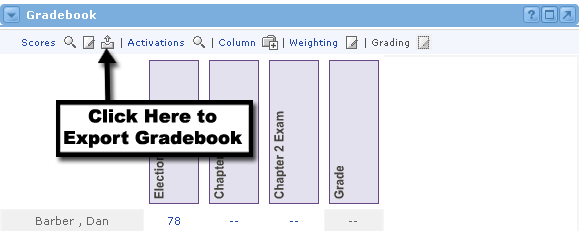

Exporting the Gradebook
The time may come when you want to export the Gradebook from Academus into an external program (such as a spreadsheet). Academus can help you export the gradebook information into a pipe-delimited text file. This means that every cell within the table will be separated by the pipe "|" character. Each row will be separated by a carriage return.
If you would like to export the gradebook in this manner, simply follow these steps:

- Locate the Gradebook channel and click the Export icon at the top of the channel next to the Scores link.
- A new window will open, showing the name of the export text file. You will also be prompted to save this file on your computer.
- Select a location on your computer and save the file.
- Once you save it, the new window will close itself.
- You now have the gradebook in .txt format.
- Follow the instructions within any external program (such as Excel) for importing a text file. Remember that this table is "pipe-delimited."